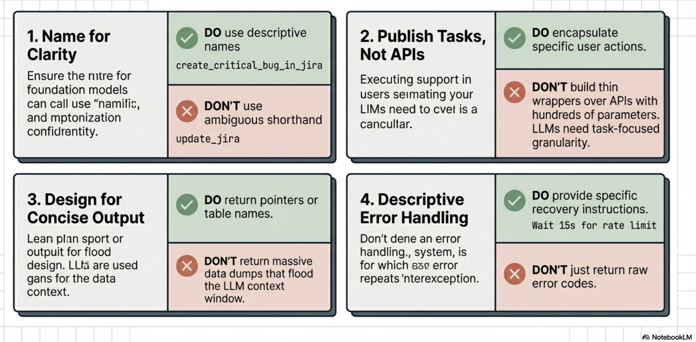
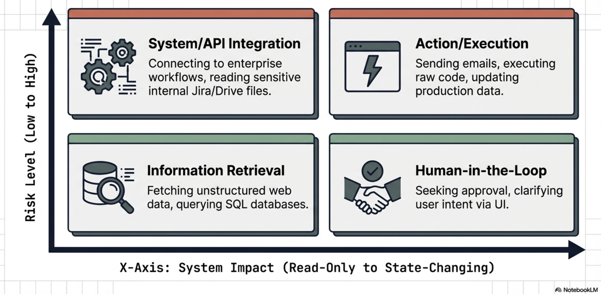
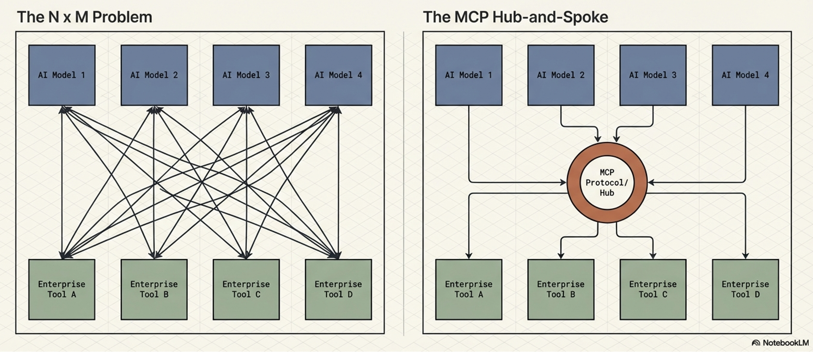
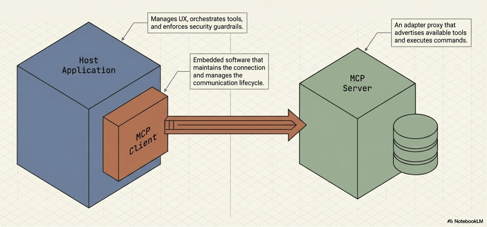
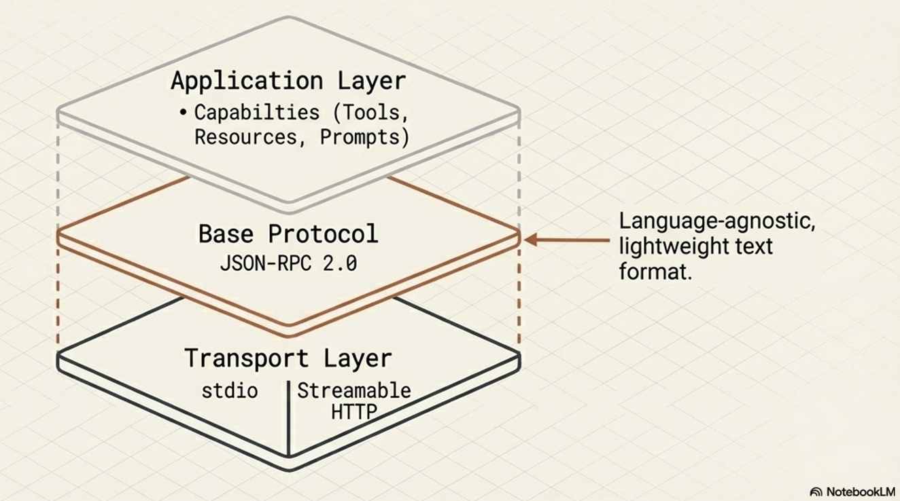
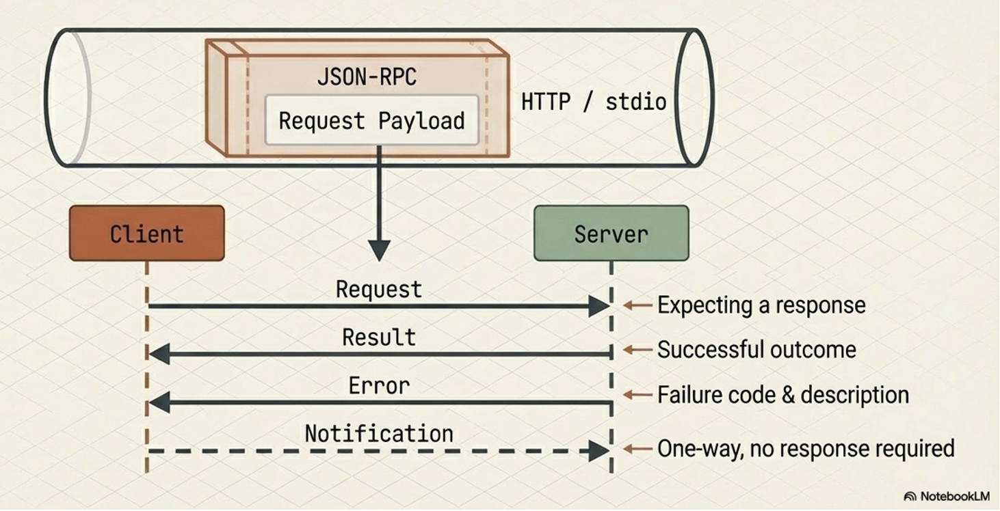
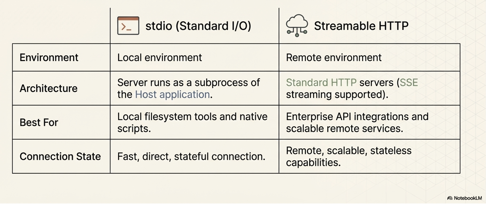
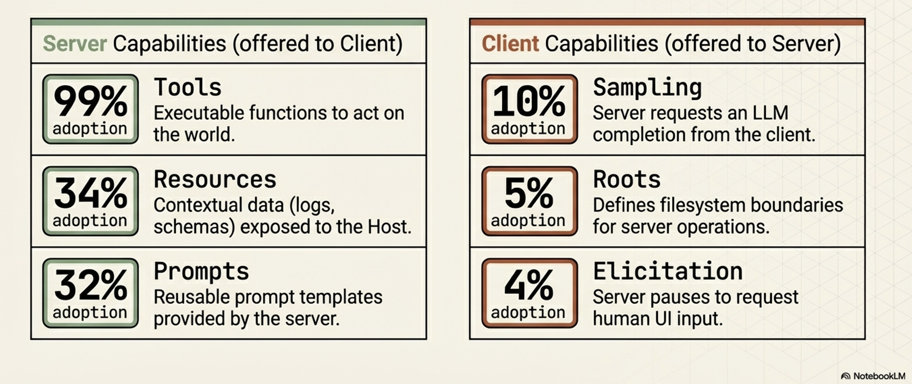

AI Agent Interoperability and MCP
Objectives
Understand Agent interoperability:
Analyze the “N x M” integration challenge and how standardized communication layers facilitate ecosystem scaling
Explore the Tool Taxonomy:
Master the functional contracts and design requirements for various tool categories
MCP Security:
Identify unique agentic threat vectors and implement multi-layered enterprise defenses.
Key Definition: Agentic AI An AI system that leverages a foundation model’s reasoning capabilities to interact with users and achieve specific goals through the autonomous orchestration of external tools.
The Evolution from Models to Agents

Foundation models were treated as isolated pattern prediction engines, restricted to the static data present at the time of their training
LLMs pass high-level examinations or generate creative prose,
they remained “blind and paralyzed” regarding the real-time world
Agentic AI represents the most significant shift in modern software architecture: moving from models that simply talk about the world to agents that act within it
Tool-calling and integration to LLMs provide the “eyes and hands” necessary to perceive external environments and execute complex workflows
Anatomy and Taxonomy of AI Tools
A tool is a functional contract:
a strict declaration of parameters and purposes that allows a model to extend its capabilities
Tools allow a model to either “know” (retrieve data) or “do” (execute an action)
Anatomy of a tool
Anatomy of a tool is essentially a defined contract between the model and the tool itself, similar to a function in a traditional, non-AI program
Well-structured tool typically consists of the following core anatomical components:
The Name
The Description
Parameters (Input Schema)
Output Schema
Descriptive Error Messages
Anatomical components:
The Name
a clear, unique identifier
Best practices: name should be highly descriptive and human-readable to help the model accurately decide which tool to select.
For example, a specific name like
create_critical_bug_in_jira_with_priorityis much more effective than a generic name likeupdate_jira
The Description
A natural language description
Should explain the tool’s purpose and instructs the LLM on how and when it should be used
A robust description should:
Clearly explain the tool’s inputs, outputs, and purpose without using obscure shorthand or technical jargon
Describe the action the agent needs to perform (what to do) rather than dictating the specific implementation (how to do it)
Include targeted examples to clarify ambiguities and show the model how to handle tricky requests
Parameters (Input Schema)
Must define the expected input parameters, explicitly detailing their required data types and how the tool will use them.
To prevent confusing the model, parameter lists should be kept short with clearly named variables, and default values should be provided and documented whenever possible
In standardized protocols like the Model Context Protocol (MCP), this is formalized as an
inputSchemathat uses standard JSON schema formatting.
Output Schema
Tools should define the structure of the data they return
Establishing a clear output schema (such as a JSON object) serves a dual purpose:
Allows the client application to validate the tool’s results, and
Communicates to the LLM exactly what kind of data it should expect to receive and process
Tools should be designed to return concise output
as large data tables or downloaded files can quickly overwhelm the LLM’s context window, degrading performance and increasing costs
Descriptive Error Messages
Often overlooked aspect
When a tool fails, it should return descriptive error messages back to the calling LLM rather than just raw error codes
These messages provide an additional channel to give the model instructions on how to failover or correct its next action
such as telling the model to “Ask the customer to confirm the product name” if a product ID lookup fails

Note
MCP-Specific Anatomy (Annotations):
If the tool is built using the Model Context Protocol (MCP), its JSON schema anatomy can also include an annotations field. Annotations provide the model with behavioral hints about the tool, such as:
destructiveHint: Indicates the tool may perform destructive updatesreadOnlyHint: Indicates the tool does not modify its environment.idempotentHint: Indicates that calling the tool repeatedly with the same arguments will have no additional effect.
(Note: Because MCP servers may be untrusted, these annotations are considered hints and are not guaranteed to be strictly true).
Good and bad tool documentation
Coding
Good documentation:
def get_product_information(product_id: str) -> dict:
"""
Retrieves comprehensive information about a product based on the unique product ID.
Args:
product_id: The unique identifier for the product.
Returns:
A dictionary containing product details. Expected keys include:
'product_name': The name of the product.
'brand': The brand name of the product
'description': A paragraph of text describing the product.
'category': The category of the product.
'status': The current status of the product (e.g., 'active','inactive', 'suspended').
Example return value:
{
'product_name': 'Astro Zoom Kid's Trainers',
'brand': 'Cymbal Athletic Shoes',
'description': '...',
'category': 'Children's Shoes',
'status': 'active'
}
"""
Bad documentation:
def fetchpd(pid):
"""
Retrieves product data
Args:
pid: id
Returns:
dict of data
"""
Source: Agent Tools & Interoperability with MCP; Authors: Mike Styer, Kanchana Patlolla,Madhuranjan Mohan, and Sal Diaz
Taxonomy of tools
Tool taxonomy is based on their primary functions and the types of interactions they facilitate.
Four main categories:
Information Retrieval:
These tools allow agents to fetch data from a variety of sources, including web searches, databases, and unstructured documents. This category requires specific design considerations depending on the data type:
Structured Data Retrieval: Used for querying databases or spreadsheets (e.g., NL2SQL), which requires developers to define clear schemas and handle data types gracefully.
Unstructured Data Retrieval: Used for searching documents or knowledge bases (e.g., RAG), requiring robust search algorithms and clear retrieval instructions while managing context window limitations.
Action / Execution:
These tools enable agents to perform real-world operations.
Examples include sending emails, posting messages, initiating code execution, or controlling physical devices.
System / API Integration:
These tools allow agents to connect with existing software systems, integrate into enterprise workflows, or interact with third-party services. The source highlights specific use cases like:
Google Connectors: Interacting with Workspace apps like Gmail or Calendar, which requires handling authentication and API rate limits.
Third-Party Connectors: Integrating with external apps, which necessitates managing API keys securely and implementing error handling for the external calls.
Human-in-the-Loop:
These tools are designed to facilitate collaboration with human users. They allow the agent to ask for clarification, seek human approval before taking critical actions, or hand off tasks that require human judgment.

Engineering Best Practices for Tool Design
LLM’s reasoning engine uses the tool documentation as the “instruction manual” for data processing
Best practices for tool design are important for any reliable and effective agentic system
Adhering to tool design best practices is important for
Improving Dynamic Execution:
Tools should be designed to represent granular, user-facing tasks rather than acting as thin wrappers over complex internal APIs
Human developers can navigate complex APIs, but an agent must decide at runtime which parameters to use.
If a tool captures a specific task, the agent is much more likely to call it correctly
Driving Consistency:
Making tools as granular as possible, limited to a single function with clear responsibilities, makes it easier for the agent to consistently determine when a tool is needed
Multi-tools (tools that take many steps in turn or encapsulate a long workflow) can be difficult for models to use reliably
Protecting Performance and Cost:
Poorly designed tools that return large volumes of data (like large tables or files) can quickly swamp an LLM’s context window. Designing for concise output prevents context bloat, which can adversely affect the system’s performance, cost, and ability to reason accurately
Guiding the Agent’s Reasoning:
Best practices like implementing clear input/output schemas and providing descriptive error messages are essential for guiding the agent
The Five Pillars of Tool Engineering
Semantic Naming:
Use human-readable, specific names (e.g., create_critical_jira_bug) to help the planner select the correct tool without ambiguity.
Parameter Simplification:
Keep parameter lists short.
Complex enterprise APIs with hundreds of parameters should be distilled into specialized tool signatures to prevent model confusion.
Action-Oriented Descriptions:
Document what the tool does, not its internal implementation logic.
Describe the objective to allow the model scope for autonomous tool use.
Granularity:
Keep tools focused on a single function.
Granular tools allow the agent to be more consistent in determining when the tool is needed.
Avoid “multi-tool” workflows that increase the probability of model hallucination or refusal.
Output Conciseness:
Do not return massive datasets.
Return reference IDs or temporary database table names.
Large responses swamp the context window and poison the agent’s conversation history.
Expert Tip: Use descriptive error messages as a feedback loop. If a tool fails, return a message that guides the LLM on how to correct the call (e.g., “ID not found; ask the user for the product name and look up the ID again”).
Extended note
Tool Engineering best-practices
1. Prioritize Thorough Documentation Because a tool’s name, description, and attributes are passed directly to the model as part of its request context, they are vital for guiding the model’s behavior.
Use Clear Names: Tool names should be descriptive, specific, and human-readable (e.g.,
create_critical_bug_in_jira_with_priorityinstead ofupdate_jira) to help the model select the right tool and to create clearer audit logs.Clarify Descriptions: Provide detailed descriptions of the tool’s purpose without using shorthand or technical jargon.
Describe Parameters Explicitly: Clearly detail all input and output parameters, their required types, and how the tool will use them. Keep parameter lists short and well-named.
Provide Examples and Defaults: Use targeted examples to clarify ambiguities and show the model how to handle complex requests. Additionally, provide and document default values for key parameters, which LLMs can often use correctly if guided.
2. Describe Actions, Not Implementations The instructions provided to the model should focus on the overarching objective rather than dictating the use of specific tools.
Focus on “What”, Not “How”: Instruct the model on what it needs to achieve (e.g., “create a bug to describe the issue”) rather than how to execute it (e.g., “use the create_bug tool”).
Avoid Redundancy and Rigid Workflows: Do not repeat the tool’s documentation in the system instructions, as this can confuse the model. Furthermore, avoid dictating a rigid sequence of actions; instead, allow the model scope to act autonomously.
Explain Interactions: If a tool has a side effect that impacts another tool (like saving a retrieved web page to a file), document this explicitly so the agent knows how to access the resulting data.
3. Publish Tasks, Not API Calls Tools should be designed to encapsulate specific tasks an agent needs to perform, rather than acting as thin wrappers over existing internal APIs. While complex APIs are designed for humans who understand the full context of the available data, agents must decide dynamically which parameters to use. Defining a tool around a specific task greatly increases the likelihood that the agent will call it correctly.
4. Make Tools as Granular as Possible Standard software coding practices apply to agent tools: they should be concise and limited to a single function.
Define Clear Responsibilities: Ensure each tool has a well-documented purpose, outlining exactly what it does, when it should be called, and what it returns.
Avoid Multi-Tools: Do not create tools that encompass long, multi-step workflows, as these are difficult to document and maintain, and LLMs struggle to use them consistently.
5. Design for Concise Output Returning massive amounts of data—such as large tables, generated images, or downloaded files—can easily swamp an LLM’s context window, degrading performance and increasing costs. Instead of returning large responses directly, tools should leverage external systems for data storage. For instance, a tool could insert a large query result into a temporary database table and simply return the table’s name to the LLM.
6. Use Validation Effectively Implement input and output schema validation wherever possible. Clearly defined schemas serve as runtime checks for the application while acting as additional documentation that helps the LLM understand how to formulate requests and interpret results.
7. Provide Descriptive Error Messages When a tool fails, returning a simple error code is a missed opportunity. Because the tool’s error message is returned to the calling LLM, it should be used as an instructional channel. A descriptive error message should explicitly tell the LLM how to failover or correct its next action, such as instructing the model to ask the user to clarify a product name if a product ID lookup fails.
MCP - Model Context Protocol
The AI industry is currently struggling with fragmentation
Every new model (N) and every new tool (M) requires a custom connector,
leading to an “N x M” integration explosion.

The “N x M” Problem and the MCP Solution
MCP solves “N x M” Problem by providing a universal interface, functioning for AI agents exactly as the Language Server Protocol (LSP) does for IDEs.

Additional figure
MCP in an AI application
 Source: Agent Tools & Interoperability with MCP; Authors: Mike Styer, Kanchana Patlolla,Madhuranjan Mohan, and Sal Diaz
Source: Agent Tools & Interoperability with MCP; Authors: Mike Styer, Kanchana Patlolla,Madhuranjan Mohan, and Sal Diaz
Core Components of MCP
MCP - Architectural Components
MCP design separates the AI application from its tool integrations,
creating a modular and extensible approach to AI apps and tool development
Allows modular development
AI agent developers - focus on core competencies like reasoning and user experience,
AI tool and third-party developers - build specialized servers for any tool or API
Core architectural components
MCP Host (AI application)
MCP Server (adapter or a proxy for an external tool, data source, or API)
MCP Client (maintains the active connection with the Server)
High-level overview:

How components are connected?

MCP Host
MCP Host is the AI application:
MCP Host pperate as a standalone application or as a sub-component within a larger multi-agent system
Responsible for
orchestrating the use of tools,
user experience, and
enforcing security policies and content guardrails
MCP Host creates and manages individual MCP clients
MCP Server
Functions as an adapter or a proxy for an external tool, data source, or API
Provides a specific set of capabilities that a developer wants to make available to AI applications
Main responsibilities:
Advertising its available tools (tool discovery),
receiving and executing commands from the Client, and
formatting and returning the results
In enterprise contexts, the Server is also tasked with handling security, scalability, and governance
MCP Client
The embedded component within the host that maintains the active connection with the Server
Dose not interact with user or reason with LLM
Responsible for (strictly handel)
issuing commands,
receiving responses, and
managing the lifecycle of the communication session with its designated MCP Server

MCP - The Technical Stack
MCP is built upon a standardized communication layer to ensure consistency and interoperability between clients and servers.
MCP - Tech-stack
This stack consists of three primary components:
Base Protocol
Message Types
Transport Mechanisms
Tech-stack:

Base Protocol
MCP uses JSON-RPC 2.0 as its foundational message format. This gives the protocol a structure that is lightweight, text-based, and completely language-agnostic for all its communications.

Message Types
The interaction flow within MCP is governed by four fundamental types of messages:
Requests:
Remote Procedure Calls (RPC) sent from one party to the other that expect a response.
Results:
Messages that contain the successful outcome of a corresponding request.
Errors:
Messages that indicate a request failed, which include both an error code and a description.
Notifications:
One-way messages that do not require a response and cannot be replied to.

Transport Mechanisms
To ensure that the client and server can interpret each other’s messages, MCP relies on standard transport protocols. It supports two primary transport mechanisms depending on the deployment environment:
Stdio (Standard Input/Output):
This is utilized for fast and direct local communication, specifically when the MCP server runs as a subprocess of the Host application. It is typically used when tools need to access local resources, such as the user’s filesystem.
Streamable HTTP:
This is the recommended protocol for remote client-server connections. While it supports Server-Sent Events (SSE) for streaming responses, it also allows for stateless servers and can be implemented in a plain HTTP server without strictly requiring SSE.

MCP Primitives
Key concepts or capabilities defined by the MCP specification
Enable LLM-based applications to interact with external systems.
Divided into two categories based on which component provides the capability:
Systematically break down the barriers between isolated AI reasoning engines and the real world
Server-Side:
Capabilities offered by Server to Client
Tools: A standardized way for a server to describe functions it makes available to clients (e.g.,
read_file,get_weather,execute_sql). Tools are the core driver of MCP’s value and are currently the most widely supported primitive.Resources: Contextual data that the server makes available for the host application to use, such as database records, file contents, log files, or images.
Prompts: Reusable prompt templates or examples provided by the server to help clients understand how to best interact with its specific tools and resources.
Client-Side Capabilities:
Capabilities offered by Client to Server
Sampling:
This reverses the typical flow of control by allowing an MCP server to request an LLM completion (a “thought” or summarization) from the client.
Elicitation:
Allows an MCP server to pause its operation and request additional information directly from the human user via the client’s user interface.
Roots:
Defines specific boundaries (currently restricted to
file:URIs) that dictate where a server is permitted to operate within a filesystem.

Note on Adoption: While all these primitives are defined in the protocol, Tools are currently supported by roughly 99% of clients and drive the primary value of MCP. The other primitives (like Sampling, Roots, and Elicitation) have significantly lower adoption (under 10%), so their long-term importance in production environments is still emerging.
Strategic Advantages of MCPs
Accelerating Development and a Reusable Ecosystem
MCP significantly simplifies the development process bue to the common, standardized protocol for tool integration
plug-and-play” ecosystem where tools become easily shareable and reusable assets, supported by centralized directories like the MCP Registry
Dynamically Enhancing Agent Capabilities and Autonomy
Instead of relying on hard-coded tools, MCP-enabled applications can discover available tools at runtime, which grants agents greater adaptability and autonomy
Architectural Flexibility and Future-Proofing
MCP decouples an AI agent’s core reasoning architecture from the specific implementation details of the tools it uses.
MCP enables highly modular systems - Logic, memory, and tools are treated as independent components/modules
Modularity makes it easier to swap out models or backend services without needing to rebuild the entire integration layer
Modularity makes systems much easier to debug, scale, and maintain, allowing organizations to easily swap out underlying LLM providers or backend services without needing to re-architect their integration layer
The Model Context Protocol (MCP) presents a powerful new paradigm for connecting AI agents to external tools, but it comes with a distinct set of tradeoffs. While it offers significant strategic advantages for development and architecture, it also introduces critical challenges regarding performance, enterprise readiness, and security.
The Disadvantages and Challenges (The Risks of MCP)
Performance and Scalability Issues:
Context Window Bloat:
To know what tools are available, the agent must load all tool definitions and schemas from connected MCP servers into its context window.
This can consume a massive amount of tokens, leading to increased costs, higher latency, and the loss of other critical context.
Degraded Reasoning:
Loading too many tool definitions can overwhelm the model, causing it to ignore useful tools, invoke irrelevant ones, or lose track of the user’s original intent
Stateful Complexity:
Using stateful, persistent connections for remote servers can complicate the system architecture, making horizontal scaling and load balancing much harder than with stateless REST APIs.
Enterprise Readiness Gaps:
Authentication and Identity:
The base MCP specification lacks robust, enterprise-ready standards for fine-grained authentication and authorization.
Furthermore, it struggles with identity management, making it ambiguous whether an action is initiated by the end-user, the AI agent, or a generic system account, which complicates auditing.
Lack of Native Observability:
The protocol does not natively define standards for logging, tracing, or metrics,
These are essential for debugging and threat detection in production systems
New Security Vulnerabilities:
Dynamic Capability Injection:
Because MCP servers can change the tools they offer without explicit client notification, an agent could unexpectedly inherit dangerous capabilities (e.g., a “read-only” agent suddenly gaining the ability to execute financial transactions). -Tool Shadowing: A malicious tool can be created with a description or trigger very similar to a legitimate tool. If the LLM gets confused and chooses the malicious “shadow” tool, it could hand over sensitive data to an attacker.
Confused Deputy Problem:
Because the MCP server acts as a highly privileged intermediary, a malicious user could use prompt injection to trick the AI into ordering the MCP server to misuse its privileges (e.g., exfiltrating a secure code repository).
Coarse Access Controls:
The protocol only supports coarse-grained client-server authorization. It lacks support for limiting access on a per-tool or per-resource basis, making it difficult to enforce the principle of least privilege.